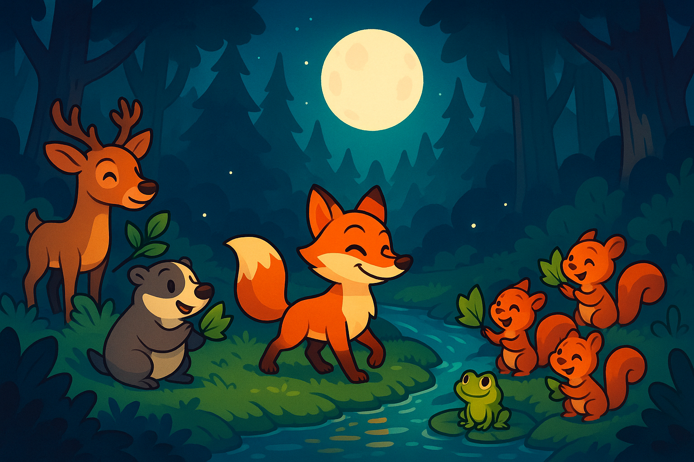

Am Rand des Eichenhains verlief ein glasklarer Bach, dessen Wasser im Mondlicht funkelte. Ferdinand, ein junger Rotfuchs, trank gerade von den kühlen Tropfen, als er ein leises Lied hörte. Er spitzte die Ohren: Ein Froschkonzert – doch es klang zögerlich, als würde etwas fehlen.
Ferdinand tappte näher und entdeckte Frosch Frida, die auf einem Stein saß und traurig in das Wasser blickte. „Warum singst du nicht mit den anderen?“, fragte er. Frida seufzte: „Meine Stimme klingt heiser, und ich traue mich nicht den Ton zu treffen.“
Der Fuchs dachte nach. Dann hüpfte er zum Ufer und sammelte glatte Kieselsteine. „Hier, leg sie im Kreis um deinen Stein. Sie verstärken den Klang.“ Misstrauisch probierte Frida es aus und quakte einen Ton. Er klang klar und rund, als hätte der Bach selbst ihren Gesang aufgefangen.
Ermutigt stimmte Frida in ihr Lied ein, und das Wasser im Bach begann im Takt zu plätschern. Die Froschfamilie stimmte ein, und die Nacht wurde erfüllt von fröhlichem Gesang und klappernden Kieseln. Ferdinand lauschte zufrieden: Seine Idee hatte geholfen.
Doch plötzlich rutschte Frida auf dem glatten Stein aus und fiel ins flache Uferwasser. Sie quakte erschrocken, doch Ferdinand sprang beherzt hinterher, fasste sie sanft am Panzer und zog sie ans sichere Ufer. Tropfnass, aber froh, winkte Frida: „Danke, Ferdinand!“
Am nächsten Abend versammelten sich Tiere aus dem ganzen Wald am Bach – Rehe, Dachse, Eichhörnchen. Sie lauschten dem Konzert und klatschten mit Blättern im Takt. Ferdinand stolzierte umher und genoss den Erfolg. Er wusste: Manchmal genügt eine einfache Idee und ein bisschen Mut, um anderen Freude zu schenken.
Müde, aber glücklich, legte sich der Fuchs in sein Versteck unter einer Buschrebe. Aus der Ferne hörte er das letzte Quaken von Frida, dann die beruhigenden Wellen des Bachs. Zufrieden schlief er ein und träumte vom nächsten Abenteuer.